Släktens Historik
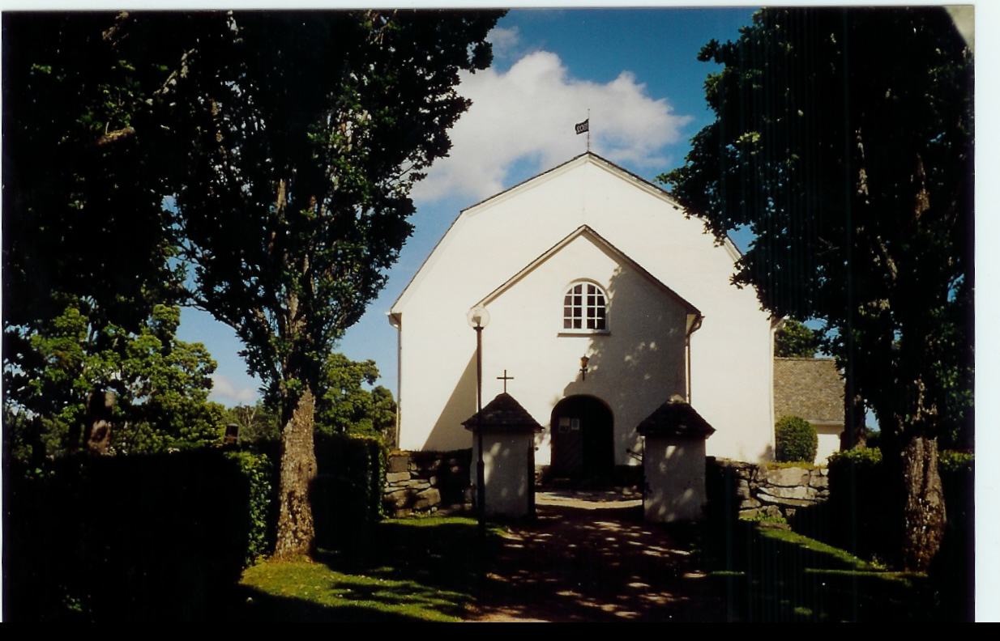
Släktens vagga stod i Dalsland och dess äldste kände stamfar är J(oh)an Er(ik)sson Skåpström, som föddes 1766 i Ånimskogs socken, som ligger ca 2 mil söder om Åmål vid sjön Ånimmen. Han tjänade först som dräng i Vingnäs i samma socken. Han gifte sig med nämndemansdottern Matia Bryngelsdotter 1788. Vid tjugofyra års ålder blev han antagen som soldat vid Västgöta-Dals regemente. 1798 fick han avsked efter åtta års tjänst. Därefter tjänstgjorde han som kyrkväktare vid Ånimskogs församling och kyrka och avled 1811.
De fick sex barn, varav den äldste sonen hette Bryngel Jansson, född 1791 på Germunde Stom i Laxarby församling, några mil väster om Åmål. Hans hustru hette Christina Bengtsdotter. Familjen flyttade till Vänersborg och därifrån till Naglum. Bryngel var torpare och gårdsrättare på Restads gård, som ligger stax söder om Vänersborg vid Göta Älv. På den tiden var Restads gård landshövdingens residens i Älvsborgs län under sommarperioden. Landshövdingen var Paul Sandelhielm under Bryngels tid som rättare på gården. Bryngel avled 1849, 58 år gammal.
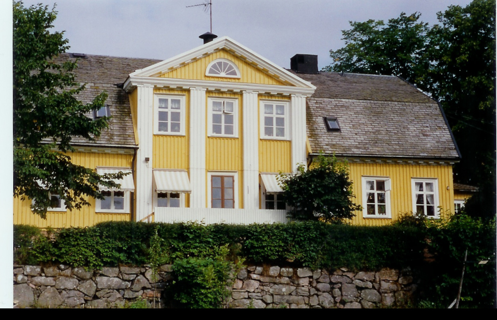
En av Bryngels tio barn var Otto Jansson, född 1837. Han kom närmast från Brinkebergs kulle utanför Vänersborg och var utbildad bleckslagaremästare. Han svarade på en annons där en änka, Hanna Hammar, vars make Carl Mauritz Hammar just avlidit i ett av de första kolerafallen i Göteborg, sökte en efterträdare som chef till den firma som hennes man grundat 1856. Företaget, C.M. Hammars mekaniska verkstad, utförde olika kopparslageriarbeten och tillverkade även fartygslanternor, fotogenlampor och lyktor. Otto fick ta över driften av företaget och det stod inte länge på förrän han och Hanna gifte sig 1868. De fick tre söner, John född 1869, Birger 1872 och Gustaf 1873. Någon gång på 1880-talet tog sig de tre bröderna efternamnet Hammar och det är alltså sedan dess, som vår släkt har burit namnet.
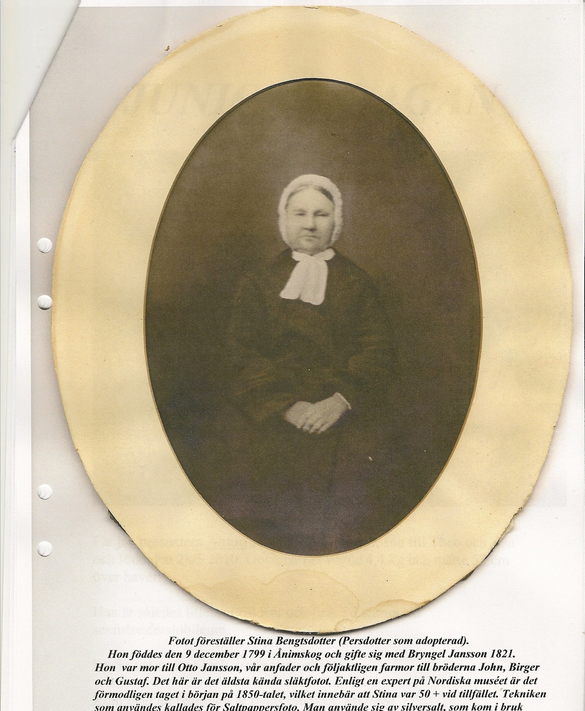
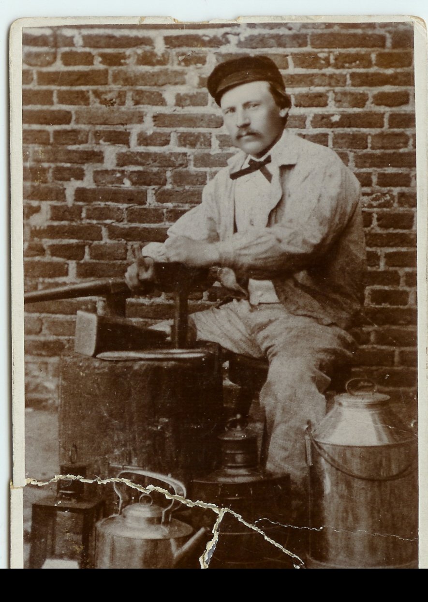
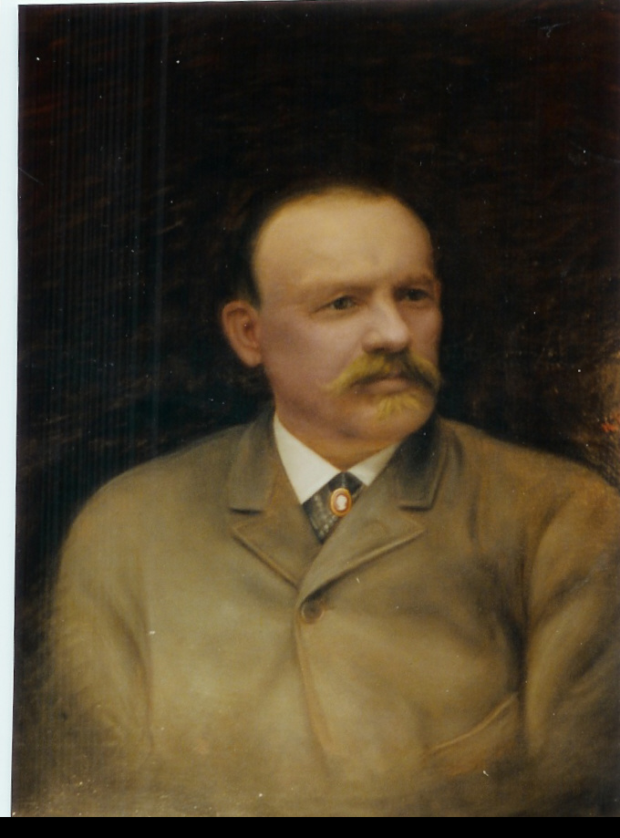
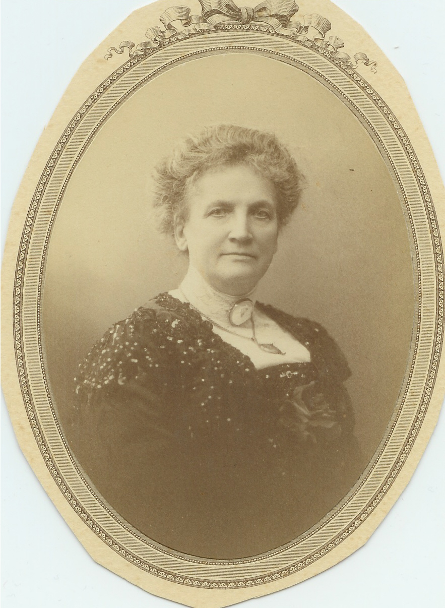
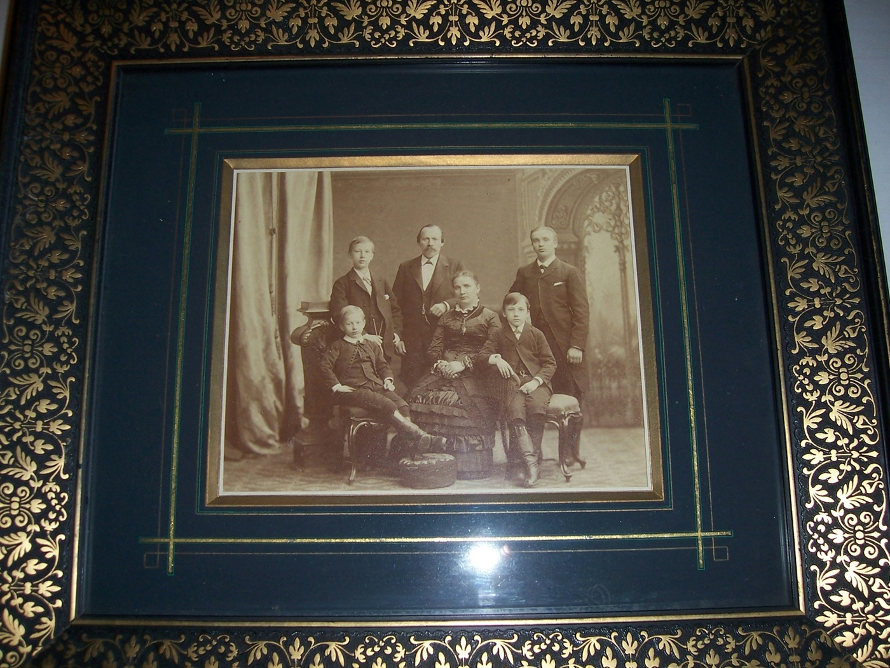
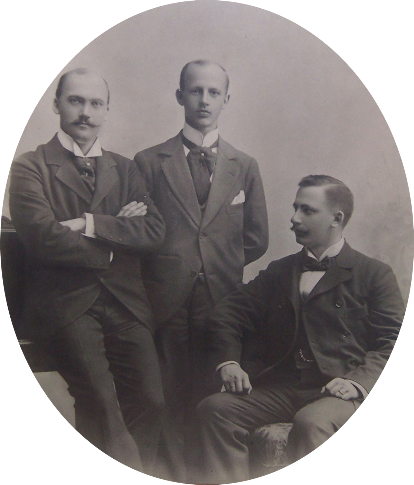
De tre bröderna Hammars liv och leverne finns utförligt beskrivet i boken "Släkten Hammar II från Göteborg", som Släktföreningen gav ut 2005. Ytterligare en källa är Svenska Släktkalendern, 2012, där släkten redovisas för sjätte gången.
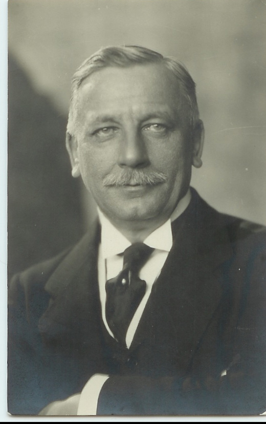
Om John Hammar, den äldste brodern, som utbildade sig till civilingenjör i London, kan nämnas att han blev chef för Sveriges Allmänna Exportförening, en föregångare till Exportrådet. Han gifte sig med Ellen Svensson (se nedan), f. 1865, som förmodas vara dotter till Carl XV och skådespelerskan Hanna Styrell, med artistnamnet Stjernblad. Hon bodde på Väntorp, en villa som Kungen skänkte henne och som låg inom bekvämt räckhåll från hans favoritslott, Ulriksdal.
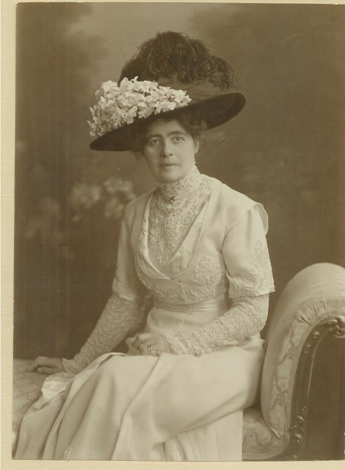
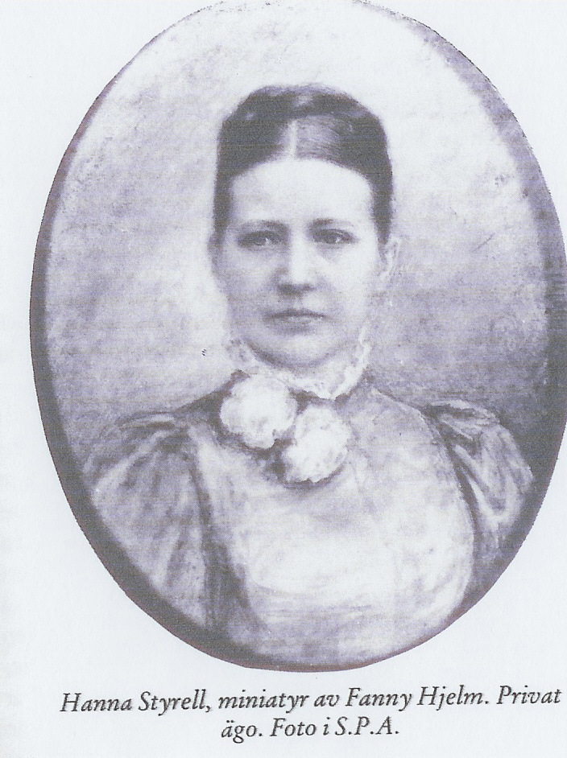
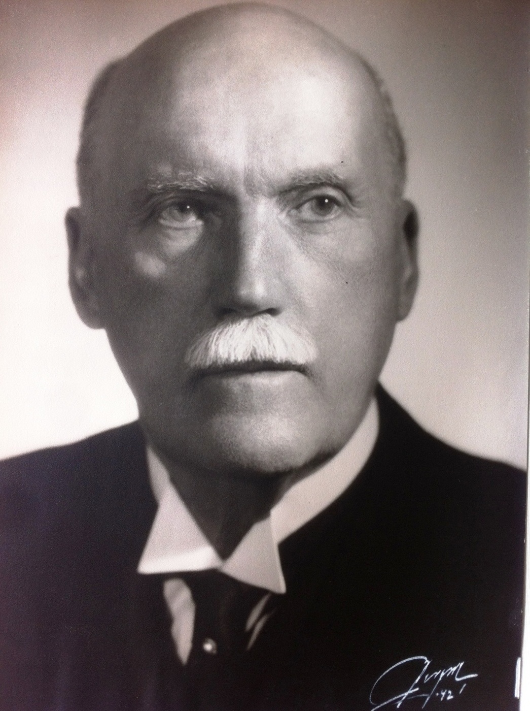
Brodern Birger Hammar tog studenten i Vänersborg och utbildade sig sedan inom grossistfirman Öhrnberg & Andersson. Därefter blev han anställd vid de Lavals företag Svea glödlampsfabrik i Hamburg. Där startade 1896 vid 24 års ålder ett eget företag, Hammar & Co. i Hamburg. Där gifte han sig med Else, från en gammal hansafamilj Rodatz. Birger återvände till Stockholm vid första världskrigets utbrott och startade där Hammar & Co. 1915. Hans största affär var förmedlingen av byggnationen av Kungsholm I till Svenska Amerikalinjen. Fartyget byggdes på varvet Blohm & Voss i Hamburg.
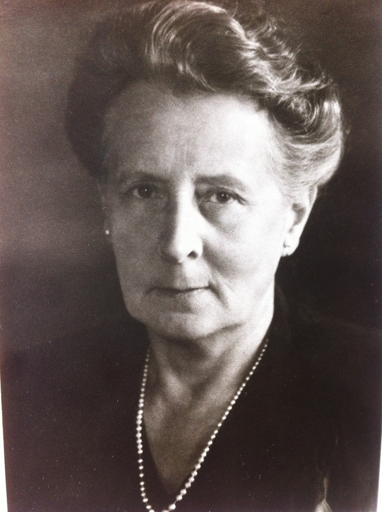
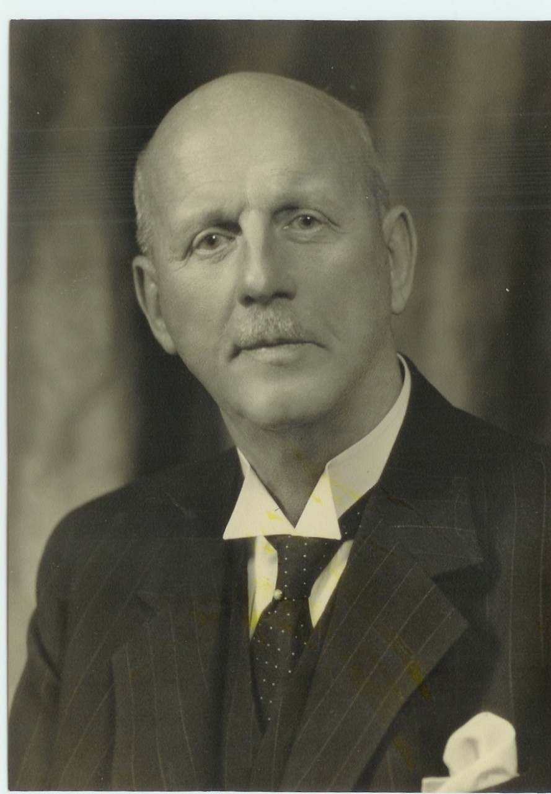
Den yngste brodern, Gustaf, blev den som tog över C.M. Hammars verksamhet i Göteborg, då han var endast 24 år. C.M. Hammars rörelse växte under hans tid och blev så småningom en av landets ledande inom den nautiska sektorn, med bl.a. kompasser som specialitet. Firman finns kvar än idag, men har naturligtvis en helt annan inriktning än på Gustafs tid. Han gifte sig med Ruth Ekstrand (se nedan), också hon från Göteborg.
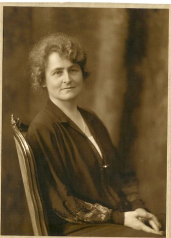